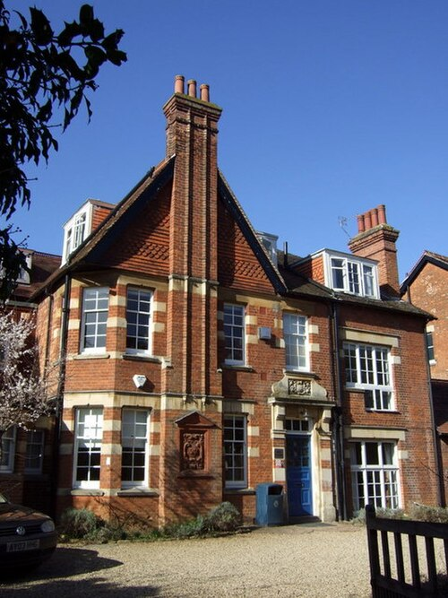
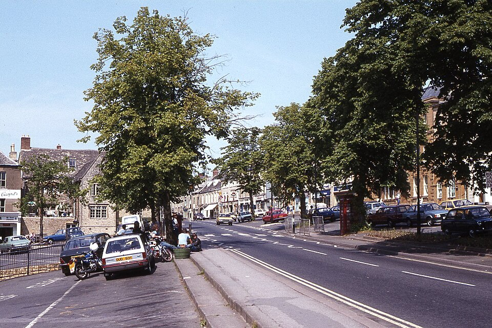
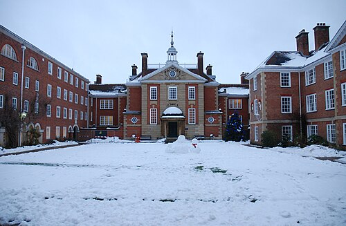

Роман · 1986
Тайна флигеля 3
The Secret of Annexe 3 — седьмой роман об инспекторе Морсе. Русское название рабочее.
- Первое издание
- Macmillan, Лондон, октябрь 1986; в США — St. Martin's Press, ноябрь 1987
- Расследуют
- главный инспектор Морс и сержант Льюис
- Место
- вымышленная гостиница «Хоуорт» на Банбери-роуд в Оксфорде, Чиппинг-Нортон
- Экранизация
- по мотивам — серия «Тайна бокса 5Б» (The Secret of Bay 5B), 25 января 1989; режиссёр Джим Годдард, сценарий Алмы Каллен
Завязка
Гостиницей «Хоуорт» на Банбери-роуд владеет Джон Биньон, выигравший в футбольный тотализатор, с женой Кэтрин; управляет ею Сара Джонстон. Гостиница — это викторианский дом и недавно купленный флигель, который ещё перестраивают; в нём заняты четыре номера. Третий год подряд здесь устраивают трёхдневный новогодний праздник: в канун Нового года — маскарадный ужин на тему «Тайна Востока», первого января — охота за сокровищами. Гостей тридцать восемь, и конкурс костюмов выигрывает мистер Баллард, наряженный растаманом.
Днём первого января Балларда находят во флигеле, в номере 3, мёртвым и изуродованным. Номер заказала по почте миссис Баллард с адресом в Чиппинг-Нортоне, которого не существует, и она исчезла. Снег вокруг флигеля нетронут: ночью никто не входил и не выходил. Большинство гостей уже разъехались, и среди соседей по флигелю оказываются дорогая проститутка с клиентом и парочка мошенников, которые живут в гостиницах и съезжают не заплатив.
Развязка — открыть, если роман прочитан
Выдуманный адрес выводит на почтальона из Чиппинг-Нортона Тома Боумена; убит именно он. Его жена Маргарет, с которой полиция говорила одной из первых, исчезает. У неё роман с крановщиком Эдвардом Уилкинсом. По версии Морса, Боумен узнал об измене и собирался убить Уилкинса в гостинице, но Маргарет предупредила любовника, и убит был Боумен.
Оба мужчины были в костюмах растаманов, чтобы запутать время смерти. Уилкинс убил Боумена ранним вечером, а алиби себе обеспечил тенор-саксофоном: в новогоднюю ночь он играл с джаз-бандом в другом пабе. Конкурс выиграл не он, а настоящий растаман, чернокожий музыкант Уинстон Грант, нанятый изображать Балларда. Уилкинса арестовывают в самолёте в Гатвике перед самым взлётом; Маргарет летела тем же рейсом, ускользнула от полиции и скрылась в Барселоне.
Люди
| Имя | Кто это |
|---|---|
| Джон и Кэтрин Биньон | Владельцы гостиницы. |
| Сара Джонстон | Управляющая гостиницей. |
| «Мистер и миссис Баллард» | Постояльцы флигеля 3. |
| «Мистер и миссис Палмер» | Соседи по флигелю. |
| «Мистер и миссис Смит» | Ещё одни соседи по флигелю. |
| Том и Маргарет Боумен | Почтальон из Чиппинг-Нортона и его жена. |
| Эдвард Уилкинс | Крановщик и джазовый саксофонист. |
Места
| Место | Что там происходит | |
|---|---|---|
| Гостиница «Хоуорт» | вымысел | Викторианский дом с флигелем на Банбери-роуд. |
| Банбери-роуд | есть | Улица больших викторианских особняков Северного Оксфорда; многие давно стали гостиницами и колледжскими общежитиями. |
| Чиппинг-Нортон | есть | Рыночный городок в Котсуолдсе, откуда якобы приехали Балларды. |
| Гатвик | есть | Второй аэропорт Лондона, где берут Уилкинса. |






Реалии
- Футбольный тотализатор (the pools)
- Еженедельные ставки на исходы футбольных матчей по купонам фирм вроде Littlewoods. Крупный выигрыш мог сделать человека владельцем гостиницы.
- Маскарадный ужин (fancy dress)
- Английский праздничный обычай: гости приходят в костюмах на заданную тему. Под маской и гримом удобно подменить одного человека другим.
- Охота за сокровищами
- Игра по запискам-подсказкам, спрятанным в доме и вокруг него; любимое развлечение английских загородных праздников.
- Флигель (annexe)
- Пристройка или отдельное здание при гостинице с дополнительными номерами.
- Растафарианство
- Религиозное движение с Ямайки; для английской публики восьмидесятых — дреды, вязаный берет красно-жёлто-зелёных цветов и регги.
Книга и сериал
«Тайна бокса 5Б» вышла 25 января 1989 года и закрыла третий сезон. В ролях: Джон Тоу, Кевин Уотли, Аманда Хиллвуд (доктор Грейлинг Рассел), Мел Мартин (Розмари Хендерсон), Филип Макгоу (Брайан Пирс), Джордж Ирвинг (Джордж Хендерсон).
- Тело находят не во флигеле гостиницы, а в машине на многоярусной стоянке.
- У Розмари двое любовников, и один убивает другого и её мужа; Пирс замешан в подделке картин. В финале Розмари арестовывают вместе с сообщником, а в романе Маргарет уходит.
- Джордж Хендерсон работает смотрителем в Уитемском лесу, который станет важен в «Дороге через лес».
- Морс и Льюис обсуждают дневник в «Белой лошади» на Брод-стрит. Морс флиртует с Грейлинг Рассел, слушает дома вступление к «Парсифалю» и в шутку объясняет, почему так и не женился.
- В пабе звучит «Барвик-Грин» — позывные радиосериала «Арчеры»; в романах Морс, по свидетельству читателей, тоже слушает «Арчеров».